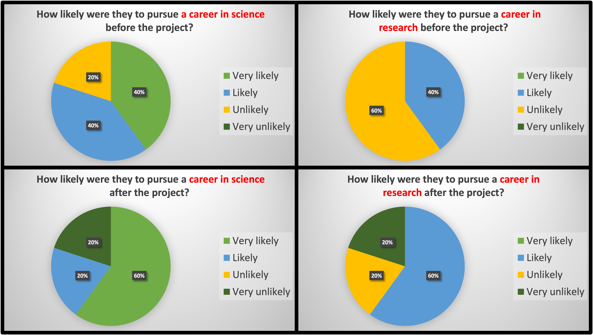

NGC 4151 Project
The first project I ran for ORBYTS was with year 10 and 12 students from the Nottingham University Academy for Science and Technology (NUAST) where we explored the AGN NGC 4151.
The aim of this project was to assess whether the NLR properties changed between observations spanning a 15 year period, by measuring the outflow velocities and distances of each region. By analysing the strongest emission lines seen in the XMM-Newton Reflection Grating Spectrometer (RGS) spectrum of 27 observations spanning six epochs between 2000 and 2015.
The velocities and distances are consistent throughout the observations, implying that there is no change in the NLR properties over a 15 year observation period.
The Python code can be can be found on my Github page
Please cite the Zenodo reference if running a similar project
Project Feedback
Before and after this project, 80% of students were likely to pursue a career in science.
Before starting this project, 60% of students were unlikely to pursue a career in research. But after the completing the project, 60% said that they were likely to pursue a career in research.
100% of students said that they would recommend the program to a friend.
Quotes
- "You made the project an enjoyable experience and taught us important skills that we will likely rely on later in our studies"
- "You were good at helping me correct the error messages and understand where the code was wrong and how to then solve it by myself"
- "Despite being an extremely in-depth advanced topic I was able to understand the broad idea of what we were doing"
- "You clearly explained any key ideas and then expanded upon them and explained in detail the cause of the spectra we were studying"
- "Very helpful and responsive with any problems I faced"